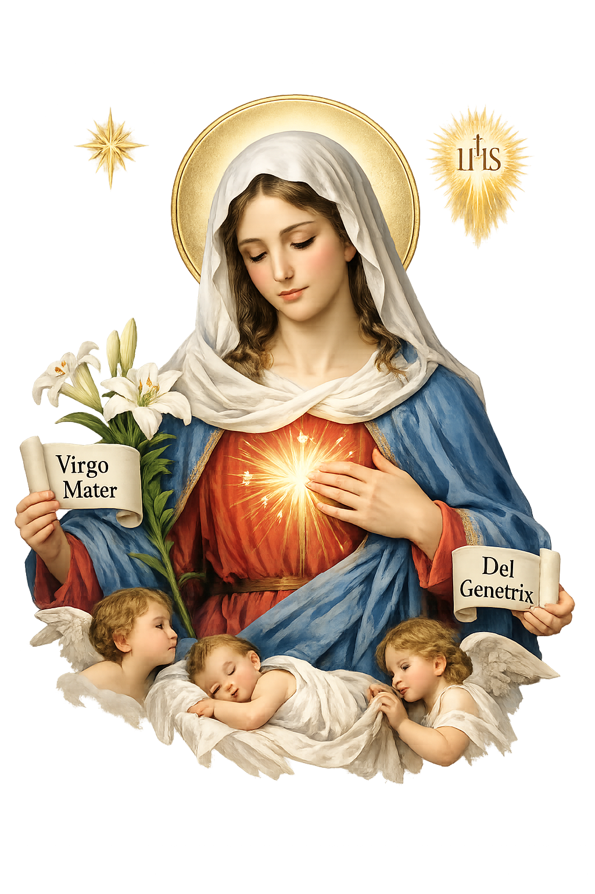

Na Escola de Maria
Um aprofundamento em Mariologia
Um aprofundamento em Mariologia
"Durante muitos séculos a figura da Mãe de Jesus foi tranquilamente associada à Virgindade. Os Evangelhos de Mateus e Lucas narram que a concepção de Jesus aconteceu por obra do Espírito Santo, sem a participação de ser humano do sexo masculino. O Credo cristão elaborado nos primeiros séculos e professado por católicos, ortodoxos e várias Igrejas protestantes afirma que Jesus foi concebido e nasceu de Maria Virgem"(MURAD, 2012; P.150) "No horizonte cristão, o questionamento sobre a concepção virginal veio da teologia bíblica... Ora nos relatos de infância de Mateus e Lucas, nos quais se encontram informações sobre a virgindade de Maria, a intenção teológica predomina sobre os simples fatos. O dogma católico da virgindade de Maria foi formulado pelo II Concílio de Constantinopla no ano de 553, que no credo, afirma: O Filho, desceu dos céus e se encarnou (na) Santa, altamente celebrada, Mãe de Deus Theotókos e sempre Virgem Maria." (MURAD, Afonso; Maria Toda de Deus e tão humana, p.150; São Paulo, 2012)
